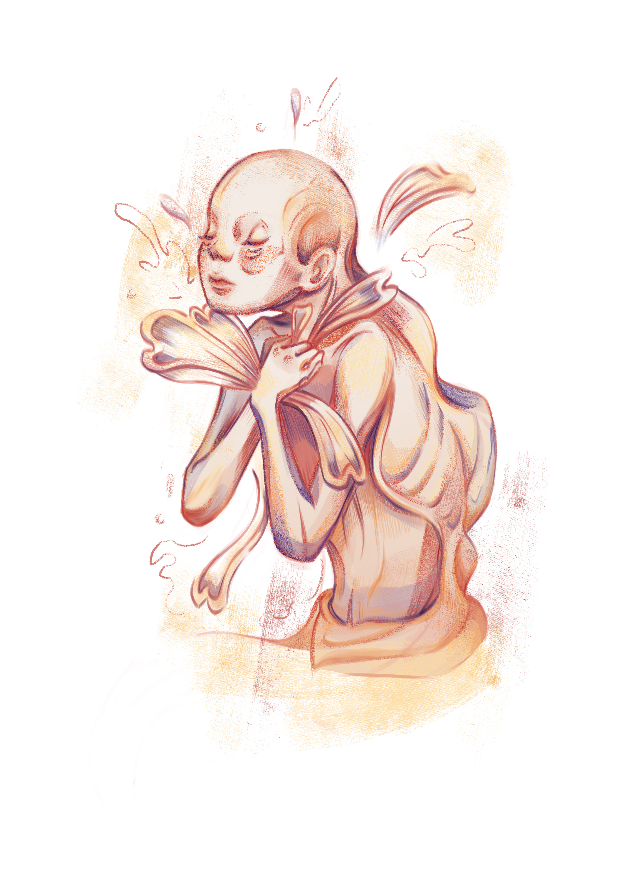

1.1
佝僂的人說：「背後隆起的部份使我羞愧，我嘗試過板起身子，我很痛苦。」
A hunchback muttered “My back is bent and my life is spent.”
1.2
另一個彎腰鴕背的人說道：「我也感到羞愧，但我不很痛苦。」
A humpback uttered “My back bends but this is no way the end.”
1.3
佝僂的人問道：「你怎麼不會想羞愧得躲起來呢？」
The hunchback asked “How is it that you are not ashamed, when this hump attracts nothing but disdain?”
1.4
對方回應道：「倘若我不是彎着身子，我便不會有想站起來的意志。」
The humpback replied “I would not want to stand up straight, if my back is always straight.”
1.5
佝僂的人這才宏觀一看，身邊的人都是鴕背的！
The hunchback lifted his head and astonished to see everyone’s a hunched back!
1.6
倘若身子沒有半點彎曲，他便是併棄了使他向上的意志，便是要漸漸萎縮。
If his back had not been bent, he would not have wanted it unbent, instead shrivelled up till the end.
1.7
之後細看，世人背上都有隆起的一塊，是它使我們想看到更高的光景。
Watching closely in retrospect, we all have humps in our backs, that reminds us of the straight backs we can have.
1.8
勇氣使我們不需要躲起來，隆起的一塊是我們肉體和靈魂的一部分。
Courage rallies us to face ourselves in denial, our humps are nothing but flesh and soul for retrieval.

在這個彎腰駝背的世代裡，你會選擇如何面對自己的佝僂？
In this world of humps, how will you face your humps?